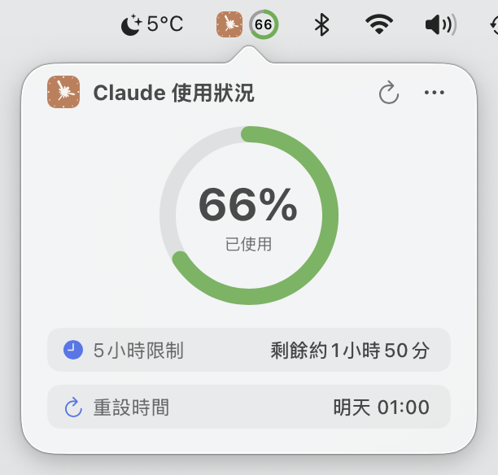
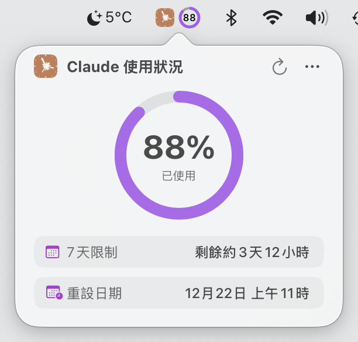

產品截圖
查看 Usage4Claude 實際執行效果
選單列顯示樣式
僅圖示

5 小時限制

雙限制

圖示 + 雙限制
詳情視窗

5 小時限制模式

7 天限制模式
雙限制模式
優雅的 macOS 選單列應用程式，支援所有 Claude 平台
為 Claude AI 使用者設計的專業監控工具
選單列即時顯示使用配額，支援 5 小時和 7 天雙限制，智慧色彩提醒（綠色→橙色→紅色 / 青色→紫色→深紫色）
統一監控所有 Claude 平台：Web 網頁版、Claude Code、桌面應用程式、行動應用程式 - 一處查看全部使用
4 級自適應更新頻率，活躍時 1 分鐘快速更新，閒置時逐步降至 10 分鐘
原生支援英語、日語、簡體中文、繁體中文，介面語言自動跟隨系統或手動切換
3 種顯示模式（僅圖示/僅百分比/圖示+百分比），3 種主題（預設/單色/彩色），滿足不同偏好
所有資料僅本地儲存，Session Key 透過 Keychain 加密，100% 開放原始碼，可自由審計
查看 Usage4Claude 實際執行效果
僅圖示
5 小時限制
雙限制
圖示 + 雙限制
5 小時限制模式
7 天限制模式
雙限制模式
系統要求：macOS 13.0 (Ventura) 或更高版本
支援 Intel 和 Apple Silicon（M1/M2/M3/M4）晶片
從 GitHub Releases 下載最新版本
開啟 DMG，拖曳到應用程式資料夾
右鍵點選並選擇「開啟」以允許執行